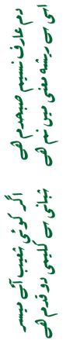

Dr Shoaib Din
Articles
Allama Iqbal Society for Promotion of Education
A proposal for Examination Practice and Evaluation Reform
Operations Research and its Prospects in Pakistan
From Abbotabad to Thandyani and Beyond ….
Cycling the Babusar Pass

Allama Iqbal Society for Promotion of Education
A proposal for Examination Practice and Evaluation Reform
Operations Research and its Prospects in Pakistan
From Abbotabad to Thandyani and Beyond ….
Cycling the Babusar Pass
Copyright © 2018 Shoaib Din